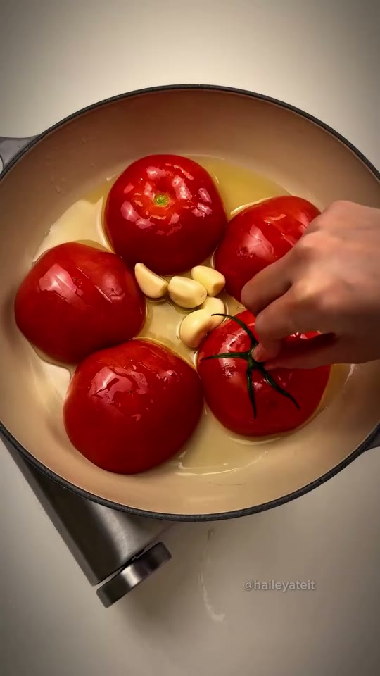

JIPBAB SHOP
전체 보기5오늘의 영상
소스 없이 원팬으로 크림 토마토 파스타
해외에서 좋아요 72만 터진 그 원팬 토마토 파스타예요
20분팬 하나
영상 속 구매 재료
레시피에 필요한 상품 2~3개를 바로 확인할 수 있어요.
준비할 재료
만드는 법
아래 순서대로 따라 하면 전체 요리가 완성됩니다.
1
재료를 먹기 좋은 크기로 손질한다.
2
팬을 달구고 기름과 마늘로 향을 낸다.
3
재료를 넣고 중불에서 익힌다.
4
소금·후추로 간을 맞춘다.
5
대파를 넣고 마무리한다.
실패하지 않는 핵심간은 마지막에. 센 불보다 중불에서 익히면 실패가 적어요.